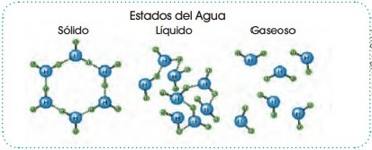
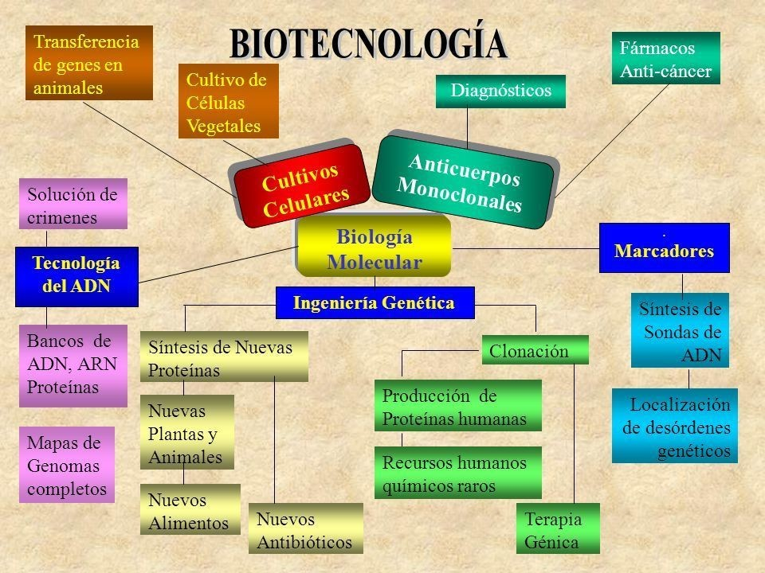
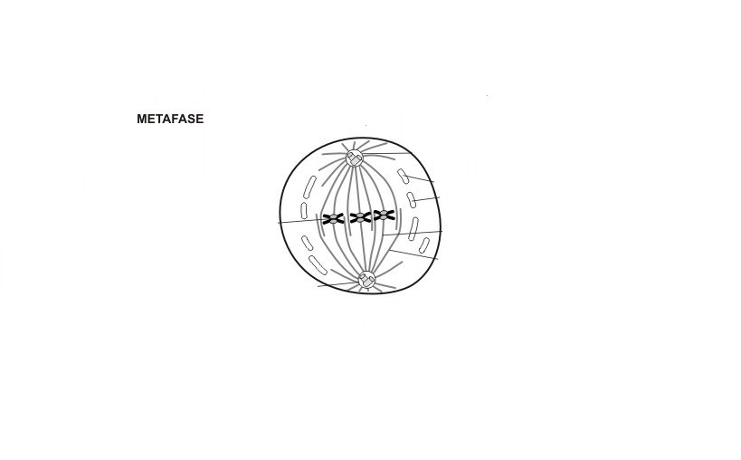
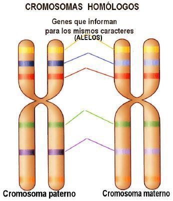
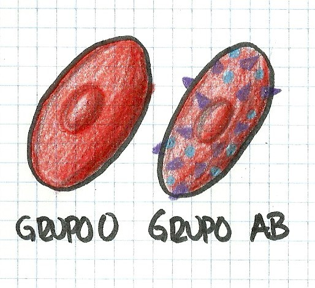

Respuesta de Actividades del Libro de Biologia 2 BGU
Elija la Unidad:
UNIDAD #0: ORIGEN DE LA VIDA BIOMOLECULAS ORGÁNICAS
1. ¿Por qué el agua forma enlaces de hidrógeno? Dibuja la estructura del agua en los tres estados de la materia.
Porque se produce una interacción dipolo-dipolo entre el átomo de hidrógeno de un enlace polar (carga positiva) con el átomo electronegativo oxígeno (O)

2. Si el hielo tuviese una densidad más grande que el agua, ¿qué sucedería en los lagos que se hielan?
El hielo no flotaría en el agua. Por lo tanto, se congelaría desde el fondo de la superficie hasta la parte superior sin permitir que el ecosistema de los lagos se mantenga igual.
3. Busca información y explica cómo los óxidos de nitrógeno que provienen de los tubos de escape de los vehículos pueden alterar el pH del agua de lluvia, y qué efectos pueden producir en los vegetales.
Los óxidos de nitrógeno al liberarse en la atmósfera se mezcla con el vapor de agua y forman ácido sulfúrico y ácido nítrico. Estos gases precipitan al ambiente alterando el pH y lo convierte en ligeramente ácido (5.65 aproximadamente).
Producen las denominadas lluvias ácidas que afectan al suelo y a su composición química lo que ocasiona que varias plantas no crezcan adecuadamente y a largo plazo se ocasione la muerte de muchas especies.
4. Las esporas y las semillas tienen un 10% de agua mientras que en el cerebro humano representa un 86%. Razona a qué crees que se debe esta diferencia. Menciona algún órgano que tenga un bajo contenido de agua.
Porque las esporas y las semillas se encuentran en un estado de almacenamiento de nutrientes, proteínas y agua preparándose para la germinación. En cambio, el cerebro se encuentra en un estado continuo y activo en el cual se desarrollan muchas reacciones químicas y biológicas que necesitan la interacción de agua (iones H)
5. Una de las propiedades fisicoquímicas del agua permite que se mantengan la forma y el volumen de las células. Comenta de qué propiedad se tra
Cohesión.
6. Compara las estructuras y las funciones del almidón, el glucógeno, la celulosa y la quitina.
Los glúcidos están compuestos por carbono, hidrógeno y oxígeno y su función principal es energética y estructural. Los lípidos están compuestos por ácidos grasos y estos a su vez por fosfolípidos (comúnmente) y su función principal es conformar membranas plasmáticas. Las proteínas están compuestas por proteínas y sus funciones son estructurales, transportadoras, catalizadoras e inmunológicas. Los ácidos nucleicos están formados por nucleótidos de ribosa (ARN) o desoxirribosa (ADN) unidas a bases nitrogenadas y su función es la síntesis de proteínas.
7. Explica cuál es la estructura de un polisacárido. Realiza un esquema para explicar el enlace O- glicosídico entre dos monosacáridos.
Los polisacáridos son moléculas que poseen una estructura extensa conformada por la unión de miles de monosacáridos unidos mediante enlace glucosídico.
Maltosa: α-D-glucopiranosil-(1→4)-α-D-glucopiranosa.
8. La fórmula general de los monosacáridos es (CH2 O)n , donde n es el número de átomos de carbono. Escribe la fórmula molecular de una triosa, una tetrosa, una pentosa y una hexosa.
Triosa: C3H6O3
Tetrosa: C4H8O4
Pentosa: C5H10O5
Hexosa: C6H12O6
9. Confecciona un esquema para clasificar a los glúcidos en el que se refleje su composición, características, función y ejemplos de cada grupo.
GLÚCIDOS
1. Composición: Carbono, Hidrógeno, Oxígeno
1.1. Estructura
- Monosacárido: 1 molécula
- Disacárido: 2 moléculas
- Oligosacárido: De 3 a 9 moléculas
- Polisacárido: Más de 10 moléculas
2. Función
2.1 Energética: monosacáridos usados combustible biológico. Ejemplo: Glucosa.
2.2. Estructural: polisacáridos complejos, resistentes. Ejemplo: celulosa, quitina
3. Usos
3.1. Nutricionales: reserva energética del cuerpo humano. Alimentos: cereales, tubérculos, frutas, etc.
3.2 Industriales: textiles, madera, papel. Producción y conservación de alimentos procesados y medicamentos.
4. Contraindicaciones
4.1. Trastornos o enfermedades: poca capacidad de digerir los nutrientes. Ejemplo: Diábetes
10. ¿De qué depende la función de una proteína? Describe brevemente las funciones que se les atribuyen.
De los aminoácidos que posea. Función estructural, inmunológica, catalizadora, transportadora, entre otras.
1. Responde las preguntas siguientes sobre esta cadena de ácido nucleico: _________AAGGCCTTAGACG_________ —¿Es un fragmento de ADN o de ARN? Justifica la respuesta.
Fragmento de ADN. Una de las características que diferencia al ADN del ARN es que el ADN posee como base nitrogenada a la Timina dentro del grupo de las pirimidinas uniéndose con la Adenina del grupo de las purinas. En cambio, el ARN posee al Uracilo en vez de Timina
12. Responde las siguientes preguntas:
a. ¿Cuáles son las funciones de los glúcidos, carbohidratos y lípidos en los seres vivos?
Los glúcidos (o carbohidratos) actúan como reserva de energía y como elementos estructurales. Los lípidos cumplen función energética, reguladora, de transporte y estructural.
b. ¿Cuál es la diferencia entre el ARN y ADN?
El ADN es una molécula formada por la azúcar desoxirribosa y el ARN está formado por la azúcar ribosa. El ADN es una molécula de doble hélice y el ARN es un fragmento obtenido de la transcripción del ADN. En el ADN se trabaja con la base nitrogenada Timina como una de las dos bases pirimidinas. En cambio, en el ARN se utiliza el Uracilo en vez de la Timina.
c. ¿Qué biomoléculas actúa como elementos de reserva de energía en los seres vivos?
Glúcidos y lípidos
13. ¿Por qué la teoría de Lamarck es evolucionista?
Porque al proponer la idea de la herencia de caracteres adquiridos plantea una visión de que la evolución en los seres humanos es un factor clave para que este se siga reproduciendo y cambiando a lo largo del tiempo.
14. ¿Por qué el alargamiento del cuello de las jirafas por el esfuerzo continuado no pasará a sus descendientes? ¿Qué tipos de cambios pueden pasar a los descendientes?
Porque la teoría de Lamarck de la herencia de caracteres adquiridos es errónea. Es decir, los cambios que pasan a los descendientes son los codificados en el gen de cada individuo o en el pool genético de una población.
15. ¿Por qué crees que Darwin tardó tanto en publicar su teoría sobre el origen de las especies?
Porque necesitaba de sólidos argumentos y evidencias para sustentar su postura que se iba en contra de lo que postulaba la Iglesia en esa época (la evolución espontánea).
16. Enumera al menos seis características que demuestren la variabilidad presente en la especie humana. Procura que alguna de ellas no sea una característica observable a simple vista.
Distinto color de ojos.
Distintos tonos de piel.
Distintos color de cabello.
Distinta posición de los dientes.
Distinta forma del pie.
Distinto tamaño de oreja.
17. ¿Cuál es la diferencia entre las plantas angiospermas y gimnospermas?
Las plantas angiospermas tienen flores y frutos. Las plantas gimnospermas no poseen ni flores ni frutos.
18. Escribe las características de las briofitas.
Son plantas gimnospermas.
Tienen estructura de talo (filoide, cauloide y rizoide).
Se reproducen por esporas. No tienen vasos conductores.
Un ejemplo son los musgos.
19. Escribe las características de las pteridofitas.
Son plantas gimnospermas.
Tienen vasos conductores.
Poseen raíces, rizoma y frondes.
Un ejemplo son los helechos.
20. ¿Qué son células eucariotas y procariotas?
Las células procariotas son células sin núcleo definido. Es decir, que el material genético se encuentra distribuido por todo el citoplasma. Las células eucariotas son células que poseen el material genético rodeado por una membrana que lo separa del citoplasma formando el núcleo.
21. ¿Qué son enfermedades patógenas?
Son enfermedades infecciosas ocasionadas por bacterias.
Contesta correctamente las siguientes preguntas.
22. ¿Cuáles son las características de las células eucariotas?
Poseen un núcleo definido en donde se encuentra el material genético. Además, está compuesto por orgánulos que se distribuyen alrededor de todo el citoplasma. Se divide en célula animal y célula vegetal.
23. ¿Cuál es la diferencia entre células procariotas y eucariotas?
Las células procariotas poseen el material genético esparcido por el citoplasma y carecen de orgánulos. Las células eucariotas poseen el material genético rodeado por una membrana nuclear (formando el núcleo) y posee orgánulos esparcidos a lo largo de todo el citoplasma.
24. ¿De qué tipos de células pueden estar constituidos los seres vivos? Explica las características de la célula eucariota.
De células eucariotas y células procariotas. Poseen un núcleo definido en donde se encuentra el material genético. Está compuesto por orgánulos que se distribuyen alrededor de todo el citoplasma. Se divide en célula animal y célula vegetal.
25. ¿Qué elementos se distinguen en el núcleo? ¿Qué relación existe entre el ADN y los cromosoma?
Material genético en forma de moléculas de ADN. Diversas proteínas entre ellas la histona para formar los cromosomas. Los cromosomas son genes formados por el ADN que se encuentra en el interior del núcleo
26. Explica en qué consisten los siguientes procesos e Indica en qué parte y órgano del sistema digestivo tienen lugar. absorción de nutrientes - deglución - insalivación - digestión estomacal - masticación - digestión intestinal - defecación
Absorción de nutrientes: Intestino grueso- Terminar de absorber los nutrientes y el agua.
Deglución: Esófago- Comprimir y dirigir la comida desde la boca hacia el esófago.
Insalivación: Boca- Se inicia el proceso químico de la digestión formándose el bolo alimenticio.
Digestión estomacal: Estómago- La comida es degradada y mezclada con el ácido gástrico y enzimas digestivas.
Masticación: Boca- Los alimentos se mastican gracias a los molares.
Digestión intestinal: Intestino delgado- Se absorbe las proteínas, los lípidos y otros principios esenciales.
Defecación: Recto- Defecar las heces
27. Explica las diferencias entre el bolo alimenticio, el quimo y el quilo.
El bolo alimenticio es el primer paso del proceso químico de digestión que se forma después de que el alimento ha sido masticado y ensalivado. El quimo se produce cuando el bolo alimenticio pasa el proceso de deglución y se descompone gracias al ácido clorhídrico en proteínas desnaturalizadas. El quilo es la mezcla del quimo con la bilis secretada por el hígado y con el jugo pancreático que posee proteasas y amilasas en el intestino delgado
28. ¿Por qué crees que es un hábito saludable masticar bien los alimentos? Justifica tu respuesta.
Porque permite que se realice un correcto proceso de digestión al degradar todo lo posible la comida en el primer paso (la masticación).
29. Describe la función de los nutrientes y pon un ejemplo.
Los nutrientes realizan funciones específicas en el organismo. Pueden hacer desde producir y aportar energía al organismo, colaborar en el crecimiento y reproducción de las células, reparación de tejidos, etc.
30. Identifica en la siguiente pirámide alimenticia qué alimentos no están bien ubicados. Indica cuál sería su ubicación correcto
1- Inicialmente tenemos en la punta bebidas alcohólicas lo cual esta incorrecto, ya que en la punta de la pirámide deben ir los azucares.
2- En el segundo nivel tenemos dulces, este va en la punta.
3- El pan y cereal no va en el final de la pirámide, se encuentra realmente en el tercer nivel de arriba hacia abajo.
4- Por otra parte en el tercer nivel se incluye el pan, por tanto se debe eliminar, ya que solo van carnes, pescado, leches y derivados.
31. Confecciona un esquema con los principales usos de los microorganismos en biotecnología.

32. Explica cuáles son los microorganismos más utilizados en el sector alimentario. —¿Cuáles son los principales procesos metabólicos asociados?
Las bacterias han sido utilizadas en el sector alimenticio con gran utilidad para facilitar procesos y contribuir con el desarrollo del mismo. Ejemplo: la fermentación de la leche para obtener sus derivados.
- Digestión. Eliminación de productos de desecho.
UNIDAD #1: LA BASE DE LA VIDA
1. Lee la siguiente información e indica por qué sabemos que la replicación del ADN es semiconservativa.
En 1958, Meselson y Stahl investigaban de qué modo tenía lugar la replicación del ADN. Contemplaban tres posibilidades: Estos dos científicos trabajaron con la bacteria Escherichia coli y medios de cultivo ricos en N14 o en N15 para poder «marcar» diferentes tipos de cadenas. Aplicaron la técnica de la ultracentrifugación en gradiente de cloruro de cesio para poder distinguir moléculas que contenían N14 y N15, es decir, moléculas ligeras y moléculas pesadas. Cultivaron las bacterias en N15 y las incubaron para que en sucesivas divisiones celulares, estas bacterias incorporasen en su ADN este marcaje.
Así, obtuvieron una población de bacterias que contenía cadenas de ADN pesadas por la incorporación del N15. Al extraer y ultracentrifugar el ADN, se observaba una banda característica (a).
• Transfirieron las bacterias a un medio con N14 y, por tanto, menos pesado. Las incubaron el tiempo suficiente para que se dividieran una sola vez. La ultracentrifugación del ADN dio un nuevo patrón de bandas (b).
• Dejaron que se dividiesen diversas generaciones y repitieron la ultracentrifugación. El patrón obtenido se observa a la derecha (c)
El experimento explica que la replicación de las bacterias de N15 en un medio de N14 formó una bacteria con una densidad intermedia. No tan alta como la del N15 ni tan baja como la del N14. Esto demuestra que es semiconservativa ya que las bacterias a pesar de estar expuestas en un medio N14, todavía mantendrían el isótopo N15 en sus moléculas de ADN.
2. A partir del proceso de replicación del ADN en procariotas y de las características propias de la replicación en eucariotas:
— Describe detalladamente los diversos procesos que se dan durante la replicación en los eucariotas. Sigue este esquema:
• Enzimas que intervienen
Enzimas: Topoisomerasas, helicasas, primasa, ADN pol III, ADN pol I, ligasa, polimerasa.
• Inicio de la replicación
Inicio de la replicación: Consiste en el desempaquetamiento de estructuras complejas en distintos puntos del cromosoma. Ocasiona que se formen horquillas de replicación.
• Diferencias entre cadena conductora y cadena retardada
Diferencias entre cadena conductora y cadena retardada: Cadena retrasada crece en sentido opuesto a la horquilla de replicación.
• Acción de la enzima telomerasa
Acción del enzima telomerasa: Lleva a cabo la elongación de los de los telómeros que permite la conservación de los mismos tras los ciclos de replicación para evitar la pérdida de material genético
3. En parejas elaboren un resumen sobre la forma en que se llevan a cabo la transcripción y la traducción con el siguiente esquema:
• Definición del proceso
• Fases que se distinguen
• Moléculas que intervienen
• Interacciones entre las distintas moléculas
• Características específicas de las células procariotas y de las células eucariotas respecto a estos procesos
La Transcripción es un proceso en el cual la secuencia de un gen se transcribe o copia para formar una molécula de ARN.
Las etapas de la transcripción son la iniciación, es cuando la ARN polimerasa se une a una secuencia llamada promotor cerca del inicio de un gen, el promotor contiene las secuencias de ADN que le permitirá a la ARN polimerasa unirse al ADN, formándose la burbuja de transcripción; la elongación, en la cual la hebra ARN se alarga al agregar nuevos nucleótidos; y finalmente la terminación consiste en que la polimerasa transcribe una secuencia de ADN llamada terminador, concluyendo así el proceso de transcripción, por lo que el Transcrito de ARN (llamado ARN mensajero o ARNm) está listo para ser usado en Traducción.
Las moléculas que intervienen en la transcripción son el ADN, el ARN polimerasa y el producto obtenido es el ARN mensajero.
Las características específicas y resaltantes de la transcripción en las células eucariotas y procariotas, son las siguientes:
En las células procariotas el promotor contiene dos secciones de ADN (los elementos -10 y -35)
En las células Eucariotas la ARN polimerasa no se une directamente a los promotores sino a proteínas auxiliares llamadas factores basales de la transcripción.
En las células procariotas puede ocurrir simultáneamente transcripción y traducción debido a que ambos procesos ocurren en dirección 5`a 3`, mientras que en las eucariotas la transcripción ocurre en el núcleo celular y la traducción en el citosol.
La Traducción es el proceso en el cual una célula traduce o lee la información contenida en el ARN m y la utiliza en la elaboración de una proteína o más específicamente de un polilpéptido(cadena de aminoácidos).
Las etapas de la traducción son : la iniciación, en el cual el ribosoma se acopla alrededor del ARNm que se va a traducir y el primer ARNt (de transferencia) que lleva consigo un aminoácido de metionina y corresponden al condón de iniciación AUG, formándose así el complejo de iniciación de la traducción; la elongación la cadena de aminoácidos se extiende, se traduce un condón a la vez del ARNm, para agregar el aminoácido que corresponde a cada condón a la cadena creciente de proteína; en la terminación la cadena polipeptídica completa es liberada, esta fase se inicia cuando un condón de terminación (UAG, UAA, o UGA) entra al ribosoma, mediante varios eventos se separa la cadena de su ARTt y le permite flotar hacia afuera.
La característica especial y resaltante de la Traducción:
Ocurre en las células eucariotas en las cuales la fase de iniciación la unidad ribosomal se une directamente a las secuencias especificas del ARNm.
4. Elaboren un cuestionario con diez preguntas claves para que sus compañeros y compañeras comprueben sus conocimientos sobre el tema. —Observa en las siguientes secuencias:
5’–UGA–3’ 5’–TATA–3’ 5’–AUG–3’ 5’–TTGACA–3’
— Indica si corresponden a ADN o a ARN, y explica qué tipo de señal representan durante el flujo de información del ADN
—Solución: 5’-UGA-3’: ARN: Señal de terminación de la traducción.
5’-TATA-3’: ADN: Secuencia promotora -10.
5’-AUG-3’: ARN: Señal de inicio de la traducción, metionina.
5’-TTGACA-3’: ADN: Secuencia promotora -35
5. Observa el esquema de la transcripción de la página 24 y transforma este fragmento de ADN procariota en ARNm
— Con el código genético de la página 28, pasa el ARNm a proteína.
ARNm: CUUCGAAAAUUGCGGUAU Leucina-Arginina-Lisina-Leucina-Arginina-Tirosina
— Supón que se producen las siguientes mutaciones:
a. 2 se sustituye por A.
CUUCGUAAAUUGCGGUAU. Sustituciones
b. Se añade una base T en el punto indicado con una flecha.
CUUCGAAAAAUUGCGGUAU. Inserciones
c. Desaparece la base 2.
CUUCGAAAUUGCGGUAU. Deleciones
— Transforma los fragmentos de ADN que resultan de las diversas mutaciones en ARNm y este último en proteína. Describe los efectos de cada mutación.
Leucina-Arginina-Asparagina-Cisteína-Glicina
UNIDAD #2: EL CICLO CELULAR
1. Define estos conceptos: • cromatina • ciclo celular • mitosis • citocinesis • interfase celular
Cromatina: Filamento que constituye los cromosomas en el ciclo celular. Visible en la profase y metafase de la división celular.
Ciclo celular: Conjunto de etapas de una célula que culmina con el origen de dos células más pequeñas.
Mitosis: División del núcleo de la célula.
Citocinesis: División del citoplasma de una célula que, tras la división nuclear, da lugar a dos células hijas.
Interfase celular: Etapa previa a la mitosis en la cual la célula se prepara para dividirse. Consta de tres etapas: G1, S y G2.
2. Resume los hechos principales que tienen lugar durante las etapas de la mitosis (profase, metafase, anafase y telofase).
La mitosis es la división del núcleo celular en donde la información genética contenida en los cromosomas se conserva y es transferida a las dos células hijas sin modificaciones.
* Profase, en esta fase se produce la condensación del material genético a partir de lo cual se forman los cromosomas, cada cromosoma consta de dos hebras llamadas cromátidas, las cuales se mantienen unidas por una parte llamada centrómero.
* Metafase, esta es la segunda etapa de la mitosis en esta etapa los pares de cromátidas se mueven hacia el centro de la célula.
Al final de la metafase se produce la autoduplicación del ADN del centrómero.
* Anafase, esta es la fase más importante ya que es aquí donde se ocurre la distribución de la información genética. Esto ocurre a partir de dos sucesos, el primero es que las proteínas que mantenían unidas a las cromátidas es cortado y se convierten en cromosomas y se dirigen hacia los centrosomas respectivos, luego ocurre una elongación de los microtúbulos lo que produce la separación de los centrosomas.
Al final de este proceso, la célula ha separado dos juegos idénticos de material genético.
* Telofase, en esta fase los microtúbulos que no se encuentran unidos a los cinetocoros siguen alargándose, lo que provoca que la célula se estire aún más. La envoltura nuclear se vuelve a formar alrededor de los cromosomas hermanos que se encuentran cada uno en un polo de la célula, estos cromosomas forman dos nuevos núcleos y se descondensan de nuevo en cromatina.
3. Elabora una hipótesis para explicar qué pasaría si se alterase el ciclo celular en cada uno de los siguientes casos
• Se frena el desarrollo de la etapa G1 por falta de nutrientes.
Si se frena el desarrollo de la Etapa G, bien sea la G1 o la G2, por falta de nutrientes, entonces la célula no podría completar el proceso de desarrollo celular, lo que ocasionaría que el proceso se interrumpiera pues no se llevaría a cabo la división celular, y la célula no podría completar sus procesos metabólicos por lo que eventualmente moriría.
• Una sustancia inhibidora impide la síntesis del ADN.
Si una sustancia inhibidora impide la síntesis del ADN entonces podríamos decir que la célula no va a poder siquiera iniciar el proceso de reproducción celular, por lo cual eventualmente morirá sin reproducirse.
4. Dibuja la estructura de un cromosoma en metafase e indica las diferencias entre este y un cromosoma en telofase

5. Realiza un informe sobre las diferencias entre la meiosis y la mitosis. Fíjate en estos aspectos de cada proceso:
a.¿Cuántas veces se divide el núcleo?
Durante la meiosis el núcleo de la célula se va a dividir dos veces, y generar cuatro células haploides; estas divisiones se denominan división meiótica I y II; en la división meiótica I ocurre la duplicación del ADN, en este paso se va a generar la diversidad genética.
b.¿Cómo son las células que se obtienen, comparadas con la célula madre?
En la mitosis las células hijas son iguales a las células madre.
En la meiosis, las células hijas poseen la mitad del material genético de las células madre.
No comprendo bien la pregunta. Pero al compararlas entre sí, las células hijas de la mitosis (dos células hijas) poseen la cantidad de cromosomas característico de la especie. En cambio, las células de la meiosis (4 células) tienen la mitad de los cromosomas característicos de la especie.
c.¿Qué diferencias se observan entre las células hijas al compararlas entre sí?
Las células hijas en la mitosis son iguales y en la meiosis se diferencian porque continente diferente material genético.
—Completa el trabajo con otros detalles que observes.
6. Indica a qué fase de la meiosis corresponden estas imágenes.
Metafase II y Anafase II.
UNIDAD #3: GENÉTICA
1. Indica si estas afirmaciones son verdaderas o falsas. Transforma estas últimas en verdaderas.
• Los caracteres hereditarios de un ser vivo están contenidos en los genes.
Verdadero
• La variabilidad genética es el conjunto de genes de un ser vivo.
Verdadero
• El genoma es la zona del cromosoma donde se localiza un gen.
Falso:El locus es la zona del cromosoma donde se localiza un gen
• Dos cromosomas son homólogos si poseen genes para los mismos caracteres.
Verdadero
• El cariotipo es un estudio de la dotación cromosómica de una especie.
Verdadero
2. Dibuja dos cromosomas homólogos para explicar qué es un gen y qué es un alelo.
Un alelo no es más que las características que tiene un gen para manifestarse de distintas formas, como por ejemplo características heredadas del padre o la madre como el color de ojos o el tipo de sangre. Y se encuentran presentes en los cromosomas homólogos que son aquellos que se emparentan dentro de una célula.
Por su parte el gen, es una estructura que delimita los rasgos hereditarios de los participantes en la miosis celular, se encarga de crear una macromolécula que posee características únicas de cada persona.
En la imagen está muy bien explicado

3. Completa los espacios en blanco de la tabla teniendo en cuenta que todos los caracteres que aparecen presentan herencia dominante
Genotipos: LL.II.
Fenotipos: Largas
Genotipos: Aa. aa.
4. ¿En qué cromosoma es probable que se encuentre un gen que determina un carácter que solo se expresa en personas de sexo masculino y nunca en las de sexo femenino? ¿Por qué?
En el cromosoma y que pertenece al par de cromosomas nº23.
5. La hemofilia es una alteración que presenta el mismo tipo de herencia que el daltonismo. Especificando el tipo de anotación que utilizarás para los dos alelos posibles, anota todos los genotipos y fenotipos posibles en hombres y mujeres.
H: no afectado por la hemofilia. Dominante h: afectado por la hemofilia. Recesivo Genotipos posibles:
Hombres: X
Hy, x
h y.
Mujeres: X
HX
H, X
Hx
H , x
h x
h
6. ¿Las personas de qué grupo sanguíneo se consideran donantes universales, es decir, pueden donar sangre a todo el mundo?
Donante universal: 0
¿De qué grupo serán las personas receptoras universales? Dibuja los glóbulos rojos de cada una de ellas.
Receptor universal: AB

7. ¿Podría ser que un niño de grupo AB tuviera un progenitor A de grupo sanguíneo 0? Razona tu respuesta.
No
8. El gen que determina el carácter «pigmentación de la piel» presenta dos alelos: un alelo q, que determina «albinismo», y el alelo Q dominante, que determina «normalidad». Del siguiente árbol genealógico:
—Deduce los genotipos que faltan.
P1: Qq.
F12: Qq.
F13: Qq:
F14: Qq o QQ.
F23: qq
—Si el individuo F23 tiene un hijo con una mujer de genotipo QQ, ¿qué genotipo y qué fenotipo presentarán sus descendientes?
Genotipo descendientes: Qq. Fenotipo: normalidad
9. Un hombre de grupo sanguíneo 0 se somete a una prueba de paternidad de un niño de grupo sanguíneo AB. ¿Es posible que ese hombre sea el padre del niño? Justifica tu respuesta.
No
10. Cuál debería ser el genotipo de los padres de dos hermanos cuyos grupos sanguíneos son AB y 0 respectivamente?
A0 y B0.
11. Escribe los genotipos de un hombre albino y una mujer no albina que tienen un hijo albino
Albinismo: a. Recesivo.
No albinismo: A.
Dominante Padre: aa.
Madre: Aa. Hijo:aa
12. Observa este árbol genealógico, que representa la transmisión de la condrodistrofia en una familia. Deduce los genotipos de los individuos señalados.
P1: Cc.
P2: cc.
F11: Cc.
F12:Cc.
F13: cc.
F14: Cc.
F15:Cc.
F16: cc.
F21:CC o Cc.
F22: cc.
F23: cc.
F24: cc.
F25:cc.
13. Después de realizar análisis durante tres generaciones de una familia, observamos la presencia de dos alelos diferentes respecto de la anemia falciforme:
• Hemoglobina normal (HbA)
• Hemoglobina falciforme (HbS)
—El árbol genealógico siguiente representa el parentesco entre los individuos. ¿Cuál es la probabilidad de que el matrimonio de F2 tenga un hijo homozigótico para el alelo falciforme?
Probabilidad 1 de 4.
14. Para el gen que determina el carácter «altura de la planta» de la tomatera, existen dos alelos: un alelo que determina «alta» y otro alelo que determina «enana». Cruzamos dos tomateras, una de fenotipo «alta» y otra de fenotipo «enana », y obtenemos veintiocho descendientes, todos ellos de fenotipo «alta».
a. ¿Cuál de los dos alelos será el dominante y cuál el recesivo?
Alelo dominante: alta. Alelo recesivo: enana
b. ¿Qué tipo de herencia presenta el carácter «altura del tallo»?
Herencia dominante
c. ¿Cuál será el genotipo de los progenitores?
AA y aa
—Realiza un esquema del cruce en el que aparezcan las anotaciones para cada tipo de alelo, el genotipo y el fenotipo de los progenitores, los gametos producidos y el genotipo y el fenotipo de los descendientes con sus proporciones
Cruce de los progenitores: AA x aa
A A
a Aa Aa
a Aa Aa
Genotipo de la F1:
100% heterocigotos Aa 4:4
Fenotipo de la F1
100% tomateras altas 4:4
15.Teniendo en cuenta que el color de la flor en el Dondiego de noche presenta herencia intermedia: Realiza un cruce entre flores blancas y rojas indicando las proporciones genotípicas y fenotípicas de la F1 y F2.
BB: Blanco RR: Rojo BR: Rosado
F1: genotipo 100% BR. Fenotipo 100% rosada.
F2: genotipo 25% BB, 25% RR y 50% BR. Fenotipo 25% blanca, 25% roja y 50% rosada
16. Se han cruzado dos platas de arveja de jardín heterocigotas para el carácter «aspecto de la semilla». Del cruce se ha obtenido un total de 184 plantas hijas. Responde las siguientes cuestiones:
a. ¿Cuántas de ellas es probable que presenten el genotipo Ll?
92 plantas
b. ¿Cuántas de ellas es probable que tengan las semillas rugosas?
46 plantas
17. El gen que controla el carácter «aspecto del tallo» en la tomatera presenta dos alelos: uno dominante, que determina «aspecto peludo» (P), y otro recesivo, que determina «aspecto sin pelos» (p). Para el gen del carácter «altura de la planta», presenta el alelo dominante «alta» (A) y el recesivo «enana» (a). Se cruza una tomatera alta y peluda con una tomatera enana y sin pelos. En la descendencia observamos: plantas altas y peludas, plantas altas y sin pelos, plantas enanas y peludas, y plantas enanas y sin pelos, todas en la misma proporción. Responde:
a. ¿Cuál es el genotipo de las plantas que se utilizaron en el cruzamiento?
PpAa y ppaa
b. ¿Cómo debería ser el genotipo de las plantas iniciales para obtener todas las tomateras descendientes «altas y peludas»?
PPAA y ppaa. (también PPAA y PPAA)
18. Representa los cruzamientos anteriores respecto al color del cuerpo. Indica cual es el carácter dominante y recesivo.
Color claro: dominante. Color oscuro: recesivo
19. Establece una hipótesis sobre la herencia del color de los ojos en Drosophila. Represéntala en un esquema en forma de árbol. Expón tu hipótesis oralmente a los compañeros y compañeras
La hipótesis sobre el color de ojos de la drosophila Melanogaster, en este caso "color de ojos White" es recesiva ligada al cromosoma sexual X y este gen se hereda de forma mendeliana.
Ésta teoría se basa en el Cruce mendeliano, La forma en Cómo se obtiene el cruce mendeliano, es mediante el estudio de las proporciones de los genes que se heredan dependiendo de su estructura y las características que estos presenten.
La genética mendeliana es un estudio metodológico ideado por mente el cual estudia las distintas proporciones que se heredan de las características de los individuos en relación a sus progenitores, mendel es considerado el padre de la genética y su obra se tomó en consideración 40 años más tarde desde su publicación.
UNIDAD #4: HISTOLOGÍA Y FISIOLOGÍA VEGETAL
1. Relaciona los siguientes conceptos:
C: produce el crecimiento en grosor de tallo y raíces.
B: proceden de las células del cambium que se dividen hacia la parte exterior.
D: Se encuentra perforada por unos orificios que permiten el intercambio gaseoso.
E: Tejido formado por células vivas con gran cantidad de vacuolas que almacenan almidón.
A: proceden de las células del cambium que se dividen hacia la parte interior
2. Explica qué se entiende por intercambio gaseoso. Describe por dónde se realiza y cómo se regula.
El intercambio de gases consiste en un proceso fisiológico en el que los seres vivos adquieren oxígeno (O₂) y eliminan dióxido de carbono (CO₂). En los seres humanos este proceso se realiza en el aparato respirartorio, además de los tejidos y órganos, siendo regulado por el sistema nervioso central
3. Teniendo en cuenta las definiciones de biomasa y de producción, determina a cuál de los dos conceptos hacen referencia las siguientes frases:
• En un bosque hay 2700 g/m2 de hojarasca.
Biomasa: En un bosque se miden 269 g de hojas/m2 y año.
• En un bosque se miden 269 g de hojas/m2 y año
Producción: En un bosque hay 2700 g/m2 de hojarasca
4. Contesta: ¿Por qué las plantas talófitas no necesitan tener un sistema de transporte?
Solución: Los talófitos presentan una estructura sin diferenciación celular ni tejidos, mucho más pequeña y sencilla que los cormófitos, por lo que el agua y los nutrientes se pueden distribuir por toda la planta sin la necesidad de un sistema de transporte
5. Explica qué diferencias encontramos entre las hormonas vegetales y las animales.
Las diferencias que podemos encontrar entre las hormonas vegetales y las hormonas animales son: ... Las hormonas vegetales son secretadas por cualquier célula del cuerpo de la planta mientras que las hormonas animales son secretadas sólo por el sistema endocrino.
6. Los centros de integración y coordinación de la información están constituidos por el sistema nervioso y el endocrino. Contesta: ¿Qué diferencias hay entre ellos?
El sistema Nervioso actúa por impulsos nerviosos y su acción es más rápida pero menos duradera. El sistema Endocrino actúa por medio de las hormonas (sustancias producidas por las glándulas y transportadas por la sangre) y su acción es más lenta pero más duradera.
7. Explica qué hormona vegetal está implicada en los siguientes procesos:
• Aceleración del crecimiento de las raíces en un esqueje que acabamos de plantar
Aceleración del crecimiento de las raíces en un esqueje que acabamos de plantar: Auxinas
• Activación de la germinación de las semillas de avena
Activación de la germinación de las semillas de avena: Giberelinas
• Aceleración de la maduración de un plátano situado junto a otros plátanos maduros
Aceleración de la maduración de un plátano situado junto a otros plátanos maduros: Etileno
• Inhibición de la germinación de las semillas
Inhibición de la germinación de las semillas: Ácido abscísico
UNIDAD #5: FISIOLOGIA ANIMAL
1. ¿Un solo embrión puede generar dos o más individuos? En caso afirmativo, explica qué estadio del desarrollo embrionario está implicado. Razona también si los individuos que provienen del mismo embrión tienen o no la misma información genética.
No
2. ¿La información genética del cigoto es la misma que la que se encuentra en una célula de la mórula? Razona la respuesta.
Sí. Sigue teniendo 46 cromosomas: 23 de origen materno y 23 de origen paterno
3. ¿Qué diferencias hay entre el arquénteron y el celoma?
Solución: El arquénteron es una cavidad con contacto al exterior por los dos extremos y que aparece en todos los animales cumpliendo la función de tubo digestivo mientras que el celoma solo aparece en algunos animales como artrópodos y vertebrados, no tiene contacto con el exterior y permite el desarrollo de órganos y sistemas
4. Explica la función de los siguientes tejidos y células: adipocitos, tejido óseo, tejido glandular, fibroblastos, mastocitos, microglías.
Los adipocitos, son células acumuladoras de grasa, que tienen como función almacenar los lípidos para regular la temperatura en el cuerpo humano y obtener energía mediante el proceso celular.
El tejido oseo, es un tejido conectivo que cumple la función de dar soporte a las articulaciones, permiten la inserción de los músculos y los tendones, permiten almacenar en un interior calcio y fósforo, contienen la médula osea roja de la sangre y sirven para proteger los órganos vitales.
El tejido glandular, es el encargado de cubrir todos los órganos secretores de sustancias, producido por las células.
Los fibroblastos, son células localizadas en el tejido conectivo, que tienen como función la formación de colágeno para el desarrollo y cicatrización de los tejidos.
Los mastocitos, son células que se encuentran en el tejido conectivo y se encargan del proceso de activación del sistema inmunitario.
Las microglias, son células que provienen de la médula osea y se encargan de responder ante el sistema inmunitario, además, de eliminar células y tejido muerto, residuos y otros agentes dañinos.
5. Contesta las siguientes preguntas que se refieren a características del tejido muscular:
a. ¿Cómo se llaman las células que lo constituyen?
Miocitos
b. ¿Qué proteínas tienen estas células que permiten la contracción muscular?
Actina y miosina
c. ¿Qué quiere decir que el tejido muscular liso tiene una contracción involuntaria?
No es voluntaria del organismo y lo controla el sistema nervioso.
6. En la respiración se obtiene CO2 .
¿Podrías decir cuántas moléculas de CO2 se obtienen a partir de una molécula de glucosa?
6 moléculas de CO2
¿Dónde se produce esta reacción?
Mitocondria
¿Con qué nombre se conoce a este tipo de respiración?
Respiración aerobia.
7. Si el porcentaje de oxígeno presente en el agua es mucho menor que en la atmósfera, ¿cómo consiguen captarlo con eficiencia los organismos acuáticos?
Mediante las membranas especializadas para captar O2 disuelto en el agua presente en las branquias
8. Elabora una relación de los diferentes pigmentos respiratorios de los invertebrados e indica el color que los caracteriza.
Relación de los diferentes pigmentos respiratorios de los invertebrados:
Hemoglobina: su color rojo.
Clorocruorina:su color verde a rojo.
Hemeritrina: su color rosado.
Hemocianina: su color azul.
9. Los peces y los poríferos son animales acuáticos. ¿Puedes explicar qué diferencias existen entre ellos en la manera de obtener el oxígeno disuelto en el agua?
Los peces utilizan branquias y los poríferos utilizan poros
10. ¿Por qué se dice que los órganos respiratorios terrestres más evolucionados y adecuados son los pulmones?
Porque son capaces de respirar oxígeno atmosférico (a pesar de que no sea puro), limpiarlo y purificarlo para utilizarlo en los procesos metabólicos esenciales y eliminar el desecho en forma de dióxido de carbono.
11. ¿Qué son las branquias externas?
Branquias externas: Filamentos ramificados con una alta vascularización que emerge a cada lado del cuello del animal.
¿Y las internas?
Razona cuáles son más evolucionadas.
Branquias internas son más evolucionadas que las branquias externas.
12. Explica los siguientes conceptos: • ctenidio • arco branquial • huesos neumatizados • líquido pleural
∵ Ctenidio: Es la branquia de los moluscos, esta tiene forma de pluma. Y están ubicadas en las partes laterales de los moluscos, tiene un eje central y dos bandas de filamentos, ellas se encargan de filtrar el intercambio de gases y a su vez filtrar alimentos.
∵ Huesos: Son un grupo de tejido conectivo duro que se encargan de proteger, sostener y dar movimiento a distintos órganos y partes del cuerpo.∵ Neumatización: Es la presencia de huecos o cavidades de aire en los huesos. Por lo tanto los huesos neumáticos o neumatizados son los huesos que presentan cavidades de aire.
∵ Arcos Bronquiales: Son hendiduras que se encuentran a ambos lados de la faringe, en los humanos estas hendiduras están presentes únicamente durante el desarrollo embrionario, estas se desarrollan a partir de las crestas craneales y dan origen a diferentes partes del cuerpo como el oído.
∵ Líquido Pleural: Es un líquido producido por el cuerpo para lubricar la pleura, la cual es una membrana que recubre el mediastino, los pulmones, el diafragma y la parte interna de la caja torácica.
13. Un ejemplo de neurohormona es la oxitocina. ¿Dónde se sintetiza? ¿Dónde actúa? ¿Qué funciones desempeña? Organiza la información en una tabla.
La oxitocina es una hormona que se sintetiza en los núcleos supraópticos y paraventriculares, ubicados en el hipotálamo. Posteriormente es liberada al torrente sanguíneo a través de la neurohipofisis.
Tiene como función modular lo relacionado a los patrones sexuales y comportamiento sexual y parental. Ademas se cree que esta relacionada con la producción de las contracciones uterinas al momento del parto y se ha comprobado que actúa en la eyección de la leche durante la lactancia
14. Un ejemplo de hormona secretada por una glándula endocrina es la adrenalina. ¿Qué glándula la secreta? ¿Sobre qué órganos actúa? ¿Qué efectos produce? Organiza la información en una tabla.
Adrenalina
¿Qué glándula la secreta?
- Las glándulas suprarrenales que están ubicadas en la parte superior de cada riñón.
¿Sobre qué órganos actúa?
- Actúa esencialmente en el sistema nervioso (cerebro) y en el aparato circulatorio (corazón)
¿Qué efectos produce?
- Se acelera el ritmo cardíaco.
- Aumenta la respiración para que la sangre se oxigene lo antes y mejor posible.
- Dilata las pupilas para “ver el peligro”.
- Aumenta la presión sanguínea
- Saca nuestras reservas de glucógeno (glucosa) para que nuestros músculos tengan el máximo combustible… para salir corriendo o luchar sin miedo.
Básicamente acelera gran parte de nuestro cuerpo, es por ello que parece que todo va más lento.
15. Respecto al sistema endocrino de los invertebrados, contesta:
a. ¿Qué son los cuerpos alados?
El cuerpo alado es el aspecto de larva mientras dura la fase de desarrollo y sintetiza la hormona juvenil.
b. ¿Qué es y qué función desempeña la ecdisona? ¿Dónde se produce?
Es una prohormona esteroide. Regula el proceso complejo de metamorfosis en los insectos. En las glándulas protorácicas.
c. ¿Qué es la metamorfosis? ¿Cómo se dirige el proceso de la metamorfosis?
Transformación biológica que sufren determinados animales desde su nacimiento hasta su madurez experimentando grandes cambios estructurales y fisiológicos
d. ¿Cómo podemos controlar una plaga de procesionaria?
Tratamientos químicos como el cipermetrin o triclofor. Tratamiento natural de eliminación (cortar, recoger y quemar los nidos en invierno)
16. Contesta las siguientes preguntas:
a. ¿Cómo llega un estímulo al hipotálamo?
A través del núcleo del Tracto Solitario que está ubicado en el tronco cerebral.
b. ¿De qué manera responde el hipotálamo a un impulso nervioso?
Cambio brusco en el estado emocional del organismo
c. ¿De qué manera responde la hipófisis al estímulo del hipotálamo?
Al enviar el estímulo a la hipófisis, este responde liberando hormonas sintetizadas. El hipotálamo actúa como regulador endocrino por los cambios emocionales.
17. Explica en qué consiste el mecanismo de retroalimentación.
La retroalimentación es un mecanismo de control de sistemas en el cual los resultados obtenidos de una tarea o actividad son reintroducidos en el sistema con la finalidad de incidir o actuar sobre las decisiones o acciones futuras
UNIDAD #6: ANATOMIA Y FISIOLOGIA HUMANA
1. Contesta: ¿Por qué crees que los bronquiolos se ramifican tanto y, por tanto, existe un gran número de alveolos pulmonares?
En el sistema respiratorio tenemos los pulmones que son una parte fundamental en el proceso de la respiración pero gracias a los bronquiolos se pueden transportar el aire y controlarlo, pues poseen una ramificación más grande de las vías respiratorias en los pulmones, y terminan en los alvéolos.
Estos bronquiolos intercambian el oxígeno con el dióxido de carbono en la sangre. Si nuestros bronquios y bronquiolos no se ramificaran, la cantidad de aire que pudiéramos inspirar y espirar sería mínima es por esta razón que los bronquiolos se ramifican innumerables veces para lograr un mejor funcionamiento.
2. Explica qué relación existe entre el sistema digestivo y el respiratorio.
Aportan la energía necesaria para que nuestro cuerpo pueda realizar todas sus funciones vitales.
3. Las personas que viven a gran altitud tienen más glóbulos rojos que la media y la red de capilares sanguíneos es más extensa. Razona el porqué.
Si, las personas que viven a gran altitud tienen más glóbulos rojos que la media y la red de capilares sanguineas es más extensa.
Es porque en gran altitud el oxígeno se rarifica y tendríamos dificultades para respirar y llenar los pulmones de oxígeno.
Entonces las personas (y los animales) que viven a gran atitud tiene genéticamente más glóbulos rojos que la media y red de capilares más extensa para compensar esta falta de oxígeno.
4. Contesta: ¿Por qué si voluntariamente detenemos la respiración, llega un momento en que esta se realiza de forma involuntaria?
Porque la respiración (controlada por el sistema nervioso) posee la característica de tener 4 formas: respiración inconsciente, respiración consciente, respiración voluntaria y respiración involuntaria.
5. Corrige las frases que sean falsas:
a. Todo el volumen de ventilación llega a los alveolos.
Falso.Sólo una parte del volumen de ventilación llega a los alveolos.
b. La composición del aire que se encuentra en los alveolos es la misma que la del aire atmosférico.
Verdadero
c. La hemoglobina puede transportar tanto O2 como CO2
Verdadero
6. Describe las siguientes partes y órganos: ventrículo – válvula mitral – arterias – vénulas aurícula – válvula tricúspide – venas – capilares
Los ventrículos son cavidades encargadas de bombear sangre a los pulmones y el resto del cuerpo. Las aurículas por su parte se encuentran encima de los ventrículos y se comunican entre ellos a través de válvulas y se encargan de recibir la sangre proveniente de las venas.
La válvula mitral esta ubicada entre la aurícula y el ventrículo izquierdo, su función es evitar que la sangre retorne del ventrículo a la aurícula izquierda, esta válvula esta formada por dos membranas las cuales están unidas por una especie de cuerdas tendinosas.
Válvula Tricúspide esta se ubica entre el ventrículo y aurícula derecha, y al igual que la mitral impide el retorno de la sangre de la sangre pero esta se encarga del lado derecho es decir que no retorne del ventrículo derecho a la aurícula derecha.
Las arterias son un conducto que se encarga de llevar sangre desde el corazón hacia las diferentes partes del cuerpo. Estas arterias se dividen en dos grandes sistemas la arteria aorta y la pulmonar.
Por su parte las venas trasladan sangre desde las diferentes partes del cuerpo hasta el corazón; estas se dividen en vena: pulmonar trasporta sangre desde los pulmones hasta la aurícula izquierda, sistemíca trasportan sangre que contiene poco oxigeno a la aurícula derecha, superficial son las que se ubican en la superficie de la piel y venas profundas estas se ubican en el tejido muscular y normalmente cerca de una arteria.
Las venulas son vasos sanguíneos en donde comienza el retorno de la sangre desde el cuerpo hacia el corazón.
Los capilares son vasos sanguíneos pequeños cuya función es el intercambio de sangre y sustancias producidas por el metabolismo celular como lo son nutrientes y gases.
7. Explica cuál es la composición de la sangre. a. ¿Qué función desempeñan sus componentes?
Plasma y elementos celulares (eritrocitos, leucocitos, trombocitos)
Plasma: Se encuentran inmersos los elementos celulares.
Eritrocitos: Trasportan el oxígeno en su interior gracias a la hemoglobina.
Leucocitos: Combaten las infecciones destruyendo los agentes infecciosos.
Trombocitos: Intervienen en los procesos de coagulación.
8. Ordena las siguientes etapas suponiendo como inicio la diástole del corazón.
a. La sangre pasa de las aurículas a los ventrículos. (C)
b. Las válvulas mitral y tricúspide están cerradas. (E)
c. La sangre de las venas cavas y pulmonares entra en las aurículas. (B)
d. Las válvulas mitral y tricúspide están abiertas. (A)
e. Los ventrículos expulsan la sangre por las arterias pulmonar y aorta. (D)
—¿Por qué cualquier etapa puede considerarse el inicio del impulso de la sangre? Justifica tu respuesta.
La circulación sanguínea tiene como finalidad llevar el oxígeno y los nutrientes moleculares a todas las células del organismo y devolver dióxido de carbono a los pulmones para expulsarlo fuera del cuerpo, es activada por el corazón, que funciona como una bomba.
La sangre oxigenada circula a través de las arterias, para ser llevada a los órganos donde el oxígeno y los nutrientes son capturados por las células. La sangre toma el dióxido de carbono y los residuos de las células, para ser eliminados en el hígado y los riñones, seguidamente, la sangre pasa a las venas y continúa hasta los pulmones donde se expulsa el dióxido de carbono y se carga de nuevo con oxígeno, para volver al corazón a dar nuevamente otra vuelta completa. La sangre llega al corazón por las aurículas y sale impulsada por los ventrículos, constituyen un sistema perfecto de riego sanguíneo constante e indetenible a todas partes del cuerpo, los vasos sanguíneos actúan como las tuberías conductoras de la sangre, el corazón es la bomba que da el impulso para que esa sangre recorra su camino, con cada latido el corazón se impulsa una gran cantidad de sangre hacia los vasos sanguíneos para circularlos por todo el cuerpo.
Es por lo antes expuesto que se puede decir que cualquier etapa del proceso circulatorio es el inicio del impulso de la sangre, ya que el mismo es constante, rápido e indetenible por el cuerpo.
9. Explica la trayectoria de una gota de sangre desde que sale del ventrículo izquierdo hasta que vuelve al mismo ventrículo.
—Señala el nombre de los principales vasos sanguíneos que recorrerá.
Ventrículo izquierdo, arteria aorta, órganos, venas cavas, aurícula derecha, ventrículo derecho, arterias pulmonares, alveolos pulmonares, venas pulmonares, aurícula izquierda.
10. Contesta: ¿Qué significa que la circulación en el ser humano es doble?
Solución: El hecho de que la circulación en el ser humano sea doble significa que la sangre recorre dos circuitos diferentes: un circuito pulmonar que lleva la sangre desoxigenada a los pulmones y la devuelve al corazón oxigenada y un circuito mayor en el que la sangre oxigenada va a todos los órganos y tejidos del cuerpo y vuelve al corazón desoxigenada
11. Explica en qué consiste la ateroesclerosis y cómo prevenirla.
La aterosclerosis es una enfermedad en la que se deposita placa dentro de las arterias. Las arterias son vasos sanguíneos que llevan sangre rica en oxígeno al corazón y a otras partes del cuerpo. La placa está compuesta por grasas, colesterol, calcio y otras sustancias que se encuentran en la sangre
12. Contesta: ¿En qué consisten los análisis de sangre? ¿Qué son los parámetros sanguíneos?
Estudio de una muestra de sangre en la que se calcula el número de diferentes elementos celulares, la cantidad y el tipo de sustancias que contiene el plasma. Los parámetros sanguíneos son los aspectos a analizar en dicha muestra
13. Contesta.
a. ¿Qué centro de control nervioso se considera el más primitivo? ¿Qué grupo de animales lo presenta?
Ganglios. Animales invertebrados
b. ¿Qué son los nervios? ¿En qué se diferencian de los ganglios?
Son los elementos del sistema nervioso periférico encargados de transportar los impulsos nerviosos por todo el cuerpo. Los ganglios son agrupaciones de los cuerpos de neuronas que se encuentran fuera del sistema nervioso central y en el trayecto de los nervios del sistema nervioso periférico
14. Explica qué es la sustancia blanca. Indica, a continuación, cómo se distribuyen las dos sustancias en cerebro, cerebelo y médula espinal.
La sustancia blanca es una parte del sistema nervioso central que se compone de las fibras nerviosas mielinizadas o los axones de las neuronas, quienes se encargan de la transmisión de información de una neurona a otra neurona y la comunicación entre las distintas áreas del cerebro.
Indica como se distribuyen las dos sustancias en el cerebro ,cerebelo y médula espinal
La sustancia blanca se encuentra en las estructuras centrales del cerebro, como el tálamo y el hipotálamo, y entre el tronco encefálico y el cerebelo.
La sustancia gris se encuentra en las regiones del cerebro encargadas del control muscular y la percepción sensorial, la memoria, el habla y toma de decisiones.
15. Define y localiza los siguientes conceptos: •cuerpo calloso •tronco encefálico •corteza motora •hipotálamo
Cuerpo calloso: Densa masa de fibras nerviosas. Mitad de los dos hemisferios cerebrales.
Tronco encefálico: Parte del encéfalo que conecta las estructuras cerebrales superiores con la médula espinal. Abajo del cerebro, arriba de la médula espinal.
Corteza motora: Área de la corteza del cerebro que controla el movimiento de los músculos esqueléticos. Se localiza en el lóbulo frontal.
Hipotálamo: Estructura formada por sustancia gris que se encarga de recibir información sobre el estado general del organismo y regular procesos metabólicos a través del sistema endocrino. Se localiza en la parte central del encéfalo abajo del tálamo
16. ¿Qué es un acto reflejo? Indica un ejemplo y explica por qué la respuesta se da más rápidamente que la respuesta somática
Un acto de reflejo es la respuesta automática o involuntaria que tienen los seres vivos al momento de presenciar un determinado estimulo. Esta respuesta generalmente va acompañada de un movimiento, o la activación de secreción de una glándula.
Por ejemplo, cuando percibimos la amenaza de un golpe, reaccionamos quitandonos o parando el golpe, de forma automática, no planificada.
El reflejo es más rapido que la respuesta somática debido a que la misma no viaja al cerebro para ser procesada, ni es elaborada pues no fue pensada previamente como la respuesta somatica.
Pues la respuesta somática básicamente se encarga (debido a su formación de neuronas sensitivas) a llevar la información (por ejemplo de dolor) desde los receptores sensoriales (algún organo de los sentidos, como los ojos) hasta el cerebro.
17. Explica qué nervios y centros nerviosos intervienen en la respuesta ejecutada por el aparato locomotor.
En el hombre distinguimos 2 sistemas nerviosos, Relación y Vegetativo.En el primero se rige y coordina las funciones de la vida y el segundo la vida vegetativa.
Sistema nervioso de relación
El encéfalo
Cerebro
Cerebelo
Bulbo raquídeo
La médula espinal
De los nervios: son cordones largos, formados por células nerviosas, que comunican el encéfalo y la médula con el resto del cuerpo. Pueden ser:
Sensitivos: llevan las sensaciones a los centros nerviosos.
Motores: llevan los estímulos desde los centros nerviosos a los músculos y glándulas.
Mixtos: realizan las dos funciones: sensitiva y motora
18. Contesta: ¿Cuáles son las funciones del sistema esquelético?
Sostener el cuerpo, proteger algunos órganos delicados, posibilitar la variedad de movimientos, ser un importante depósito de minerales.
19. Contesta: ¿Qué son las articulaciones? ¿Por qué son fijas las articulaciones del cráneo?
Son uniones entre dos o más huesos. Porque proporcionan una gran estabilidad a los órganos dentro del cráneo.
20. ¿Cuál es la función del sistema muscular?
Inducir el movimiento gracias a su capacidad de contracción.
—Explica una diferencia y una semejanza con el sistema esquelético.
Semejanza: ambos sistemas están relacionados con la movilidad del cuerpo, cada uno cumple una función fundamental para que el cuerpo humano puede moverse.
Diferencia: el sistema esquelético se compone de hueso mientras que el muscular se compone de tejidos especiales.
21. Contesta: ¿Qué son los tendones? ¿Cuál es su función?
Estructuras alargadas de tejido conjuntivo. Permiten que los músculos esqueléticos que constituyen bandas de fibras puedan insertarse en los huesos.
22. Cita los principales huesos y músculos de una extremidad inferior
Huesos: Fémur, rótula, tibia, peroné, tarsos, metatarsos, falanges, calcáneo.
Músculos: Isquiotibiales, gemelos, sóleo, cuádriceps y tibial.
23. Contesta: ¿Qué beneficios, sobre la salud del aparato locomotor, produce la práctica de ejercicio físico?
Algunos de los beneficios que tiene sobre la salud el ejercicio físico recae principalmente sobre el aparato locomotor, y te mantener en buen y adecuado funcionamiento el sistema muscular, manteniendo a los fuertes y desarrollados así como un incremento en la circulación sanguínea y evitar el desgaste del sistema óseo.
Gozar de un estilo de vida saludable supone de cuidar adecuadamente de nuestra salud y nuestro cuerpo de forma integral, lo cual es necesario llevar un estilo de vida donde nuestra alimentación sea variada y balanceada así como también practicar ejercicios regularmente.
24. ¿Qué es una fractura? —Explica los síntomas y el tratamiento que se debe seguir en ambos casos.
La fractura es una lesión que consiste en la rotura parcial o total de un hueso debido a un traumatismo externo.
¿Y un esguince?
Un esguince consiste en la rotura o una excesiva distensión de los ligamentos de las articulaciones debido a un traumatismo o a un movimiento
25. Analiza tu postura mientras lees esta actividad. ¿Crees que presentas algún mal hábito postural? Describe en qué consiste y cuál sería la postura correcta.
La postura mientras se está realizando una actividad académica, en este caso leyendo afecta debido a la mala posición desde la cervical, columna, posicionando el tronco y cabeza de una forma inadecuada.
No es una buena postura y acarrea consecuencias es por ello que se recomienda tratarla para una mejorarla a tiempo.
26. Explica en qué consiste un estudio radiológico y qué nos permite diagnosticar.
Un estudio radiológico, no es mas que una imagen la cual permite visualizar el sistema braquial (huesos) del ser humano y alguno de los órganos. Permite diagnosticar por medio de la observación a la imagen alguna afección, anomalía, fisura o fractura.
El estudio radiológico permite estudiar mediante los siguientes procedimientos distintas patologías:
Rayos x de tórax.
Resonancia Magnética.
Mamografia.
Tomografía.
Ecografia.